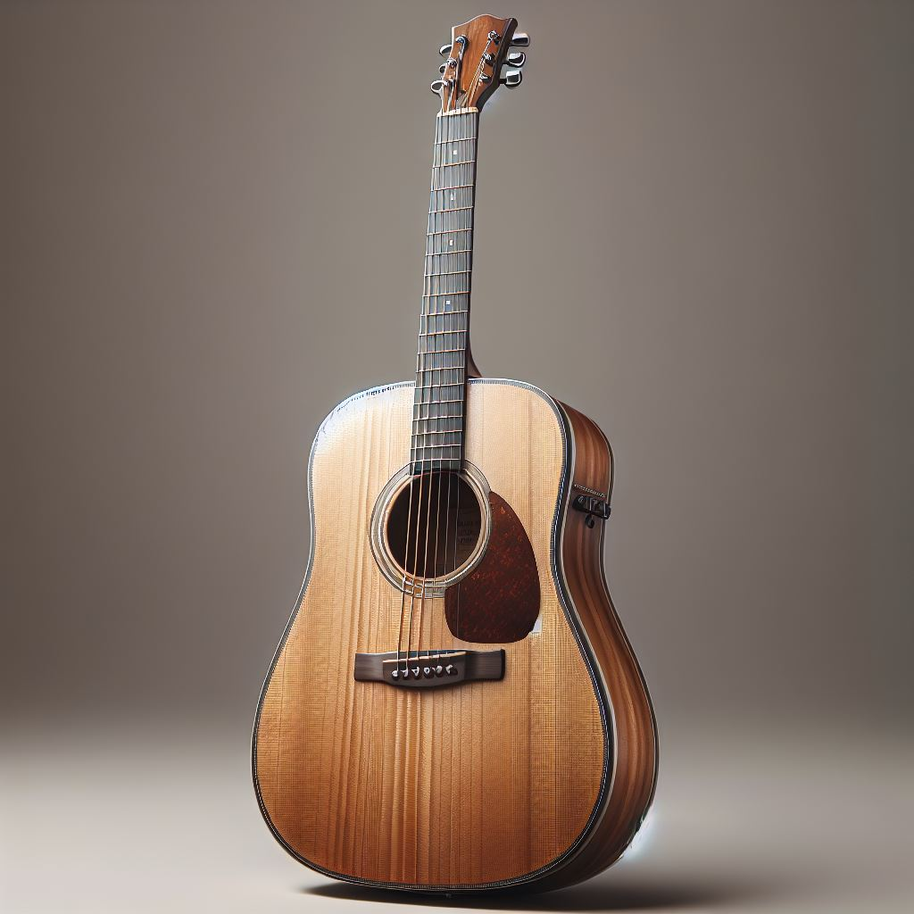
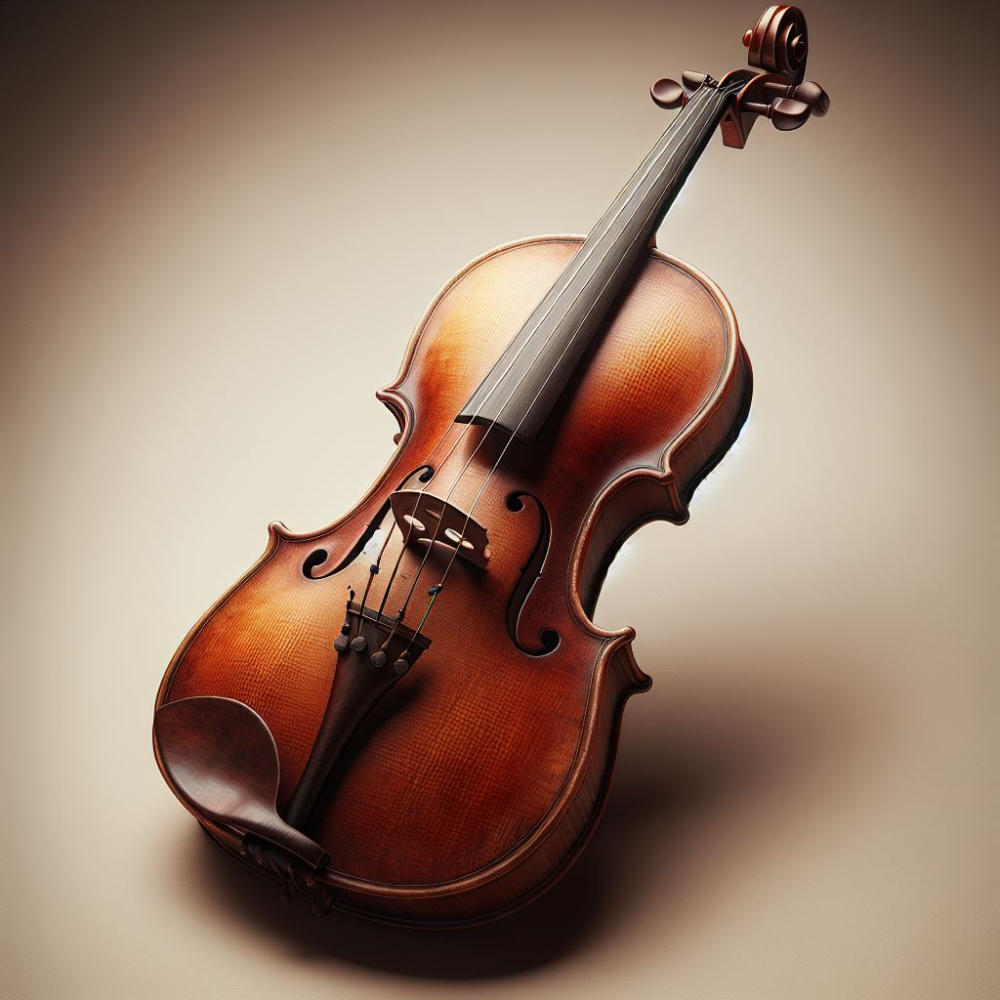
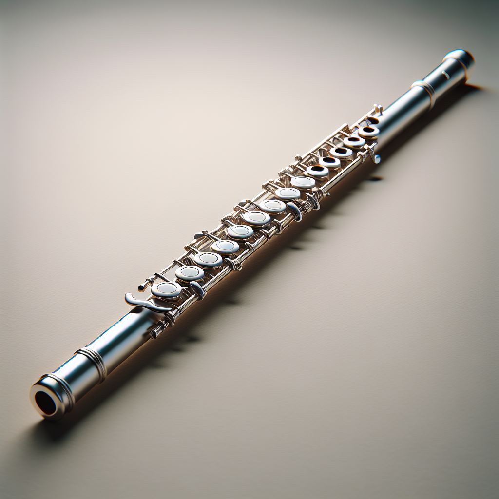

Instrumentos Musicales Antiguos

La guitarra, un instrumento clásico con una rica historia y versatilidad sonora.
Guitarra

El violín, un instrumento de cuerda frotada conocido por su sonido expresivo y su papel central en la música clásica.
Violin

La flauta, un instrumento de cuerda frotada conocido por su sonido expresivo y su papel central en la música clásica.
Flauta

La lira, un instrumento de cuerda frotada conocido por su sonido expresivo y su papel central en la música clásica.
Lira

La castañuelas, un instrumento de cuerda frotada conocido por su sonido expresivo y su papel central en la música clásica.
Castañuelas